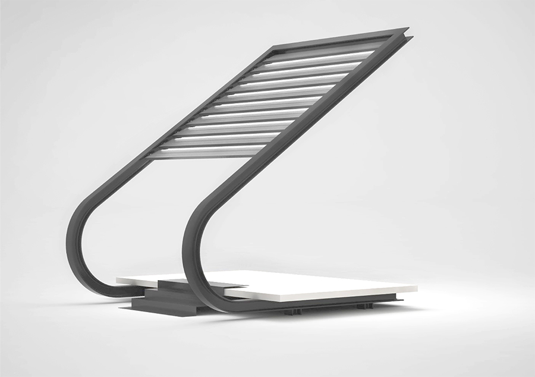

Este proyecto surge con la intención de realizar un nuevo elemento urbano, uno capaz de romper con la concepción que se ha ido generando sobre lo que debe ser la calle: una zona de paso, una ruta inhabitable y alienada don-de quedarse quieto solo tiene sentido bajo una premisa de consumo, en cualquier terraza de bar o similar. Los espacios públicos habitables en Barcelona van desapa-reciendo, pues si no generan riqueza se ven substituidos por lugares de consumo.
Es cierto que aún hay lugares habitables para la vida, como lo es La Ciutadella, donde cada día se pueden ver un gran número de barcelone-ses haciendo sencillamente eso, vivir. Pero la realidad mayoritaria es que la ciudad no se deja habitar o sor-prender más allá de actuaciones esporádicas y efímeras, destinadas a desaparecer sin dejar rastro para volver a la ciudad estéril. Entendemos el diseño como un catalizador del acto de vivir (de la misma forma que la arquitectura es un capacitador de dicho acto), por lo que no deja de sorprendernos que por más Design Weeks que haya en la ciudad la vida de sus habitantes, por lo menos en lo referente a la vida pública, no hace sino que denigrarse paulatinamente.
La respuesta al por qué de esta situación no está en un cambio de conducta de los barceloneses, sino en la priva-tización de las infraestructuras necesarias para llevar a cabo la vida pública en la ciudad. Si hay un cambio de conducta en la vida ciudadana es como consecuencia de dicha privatización y no por voluntad propia. Abertis, Gas Natural, Endesa Distribución, Criteria Caixaholding o Aguas de Busot de Barcelona son algunos de los ejem-plos claros que componen la economía metropolitana de Barcelona, una economía privada y dependiente del mer-cado capitalista.
En cambio, entidades como Barcelona Servicios Municipales (B:SM) que proporciona servicios vinculados a la movilidad y al patrimonio urbano, tienen poca o ninguna capacidad de acción real sobre el entramado urbano. La privatización de las infraestructuras de la ciudad tienen consecuencias nocivas para sus ciudada-nos, pues es poco probable que una tara urbana reporte los beneficios que demanda una entidad vinculada al capital. Los únicos cambios que podemos observar en el entramado de Barcelona corresponden a la ganancia por parte de entidades privadas o a la promoción de la ciudad como marca internacional.
"El usuario de Barcelona ya no es el ciudadano sino el turista, con lo que sus habitantes se ven desplazados del centro de acción: aquello que ocurre no es para ellos, haya o no un diseño centrado en el usuario."
Debemos buscar la solución a un problema que justifique la existencia de dicho elemento urbano, un problema que afecte directa y exclusivamente a los ciudadanos de Bar-celona y que su solución les reporte una mayor calidad de vida. No hablamos aquí de la pobreza energética o del desahucio, pues entendemos los límites del diseño de un elemento urbano y no pretendemos hacer política. Lo que buscamos es generar una mayor experiencia ciudadana que permita retomar la ciudad, pero sin pretensiones moralistas o utópicas. Tampoco hablamos de abolir el consumo, sino más bien contrario; lo que queremos es simplemente canalizarlo de tal manera que también incluya a los barceloneses.
